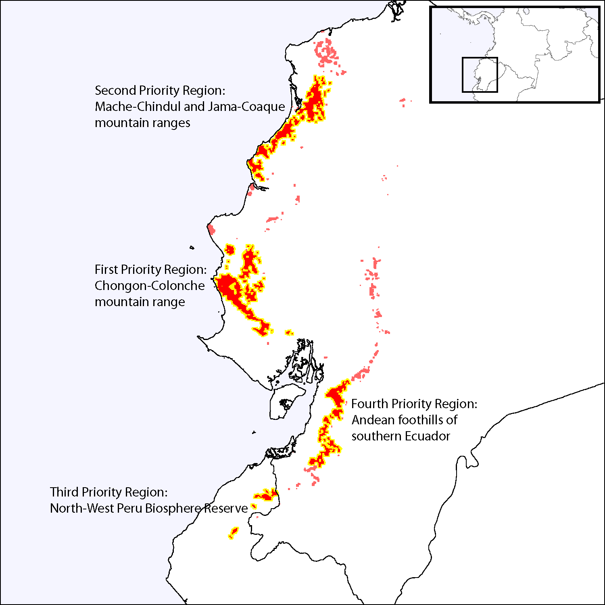

Distribution and abundance of the Ecuadorian capuchin
The Ecuadorian capuchin (Cebus albifrons aequatorialis) is a critically endangered primate found only in the fragmented forests of western Ecuador and northern Peru, which are among the most imperiled ecosystems on earth. Together with Katharine Jack of Tulane University, I carried out surveys across western Ecuador for C. a. aequatorialis. We have described several new presence localities as well as habitat preferences for this rare and poorly-studied primate.
Jack and Campos (2012) Trop Conserv Sci.
Potential distribution and conservation of the Ecuadorian capuchin
We have also modeled the potential distribution and environmental associations of C. a. aequatorialis, using all known presence localities recorded within the last two decades as well as a variety of climate, topography, vegetation, and land-use GIS data sets covering the entire geographic range of the subspecies. We use this model to estimate the total carrying capacity and remaining population size, and we lay out clear conservation priorities that focus on protecting the small surviving populations.
Campos and Jack (2013) Int J Primatol.
